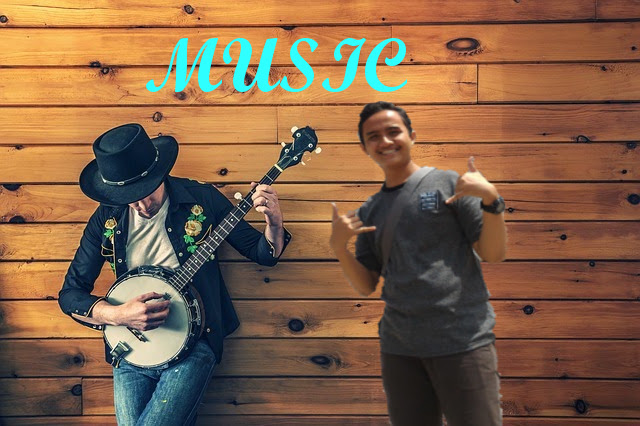
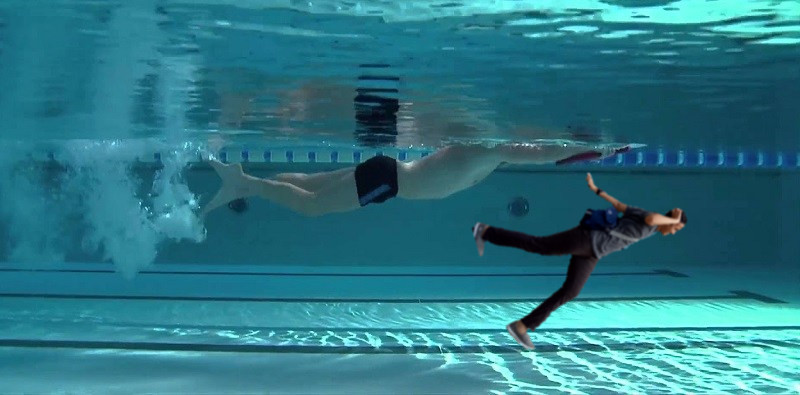

Nama saya Rifki Cholil Lulloh, lahir di Jakarta, Tanggal 11 Agustus 2001, saya anak kedua dari dua bersaudara. Tempat tinggal saya di Jl. Haji. jusin Rt.012/Rw.01 kecamatan ciracas kelurahan susukan Jakarta Timur. saya bercita-cita ingin menjadi Dokter. Golongan Darah saya AB. Pekerjaan masih pelajar. Makanan yang paling saya suka baso dan sate padang sedangkan minumannya es krim dan jus alpukat serta jus strawberry
Pendidikan saya..... saya sekolah TK di TK Rilfa karena TK tersebut dekat dengan rumah saya. Setelah itu, saya melanjutkannya ke SD Susukan 01 Pagi. Alhamdulillah saya mendapat nilai UN terbaik di sekolah. Setelah itu saya mendaftar ke salah satu sekolah yang berada di Jakarta Timur yaitu SMPN 174 Jakarta Timur. Setelah lulus dari SMP 174, Keluargaku dan saya berniat untuk melenjutkannya ke SMK-SMAKBogor, tetapi untuk masuk sekolah favorit harus melakukan test terlebih dahulu. Dan saya mengikuti test tertulis tersebut walaupun saya tidak keterima lewat jalur rapot tetapi saya lolos lewat test tertulis. Saya sangat senang sekali saat melihat di papan pengumumman terdapat nomor test tertulis saya dan itupun berkat doa dari kedua orang tua saya. I LOVE MY MOM AND DAD. Saya senang sekali menjadi siswa SMK-SMAKBogor. Dan sekarang saya telah menempuh semester 4 :)
Menurut saya semua orang pasti mempunyai hobi. Disini saya akan menceritakan sedikit tentang hobi saya. Saya sangat menyukai Hobi berenang, mendengarkan musik sampai baca komik pun saya suka (hanya hobi sesaat) Berenang merupakan hobi saya sejak berumur 10 tahun. saya mulai bisa berenang itu saat kelas 1 SMP, itu pun karena sejak SD hampir 2 kali seminggu. saya melakukan berenang. Dengan sabarnya ayah saya membimbing saya untuk bisa berenang. Dengan 2 kali seminggu saya latihan berenang, saya pun bisa berenang dengan lancar. Dan ketika masuk SMP, tugas pun menjadi banyak dan saya mulai berkurang melakukan berenang, biasanya 2 kali seminggu sekarang 3 bulan sekali. Semenjak saya sekolah di SMAKBO, hobi berenang pun mulai berkurang dan hobi saya dengan mendengarkan musik semakin berkembang. Kenapa bisa begitu ?? itupun dikarenakan saya memiliki tugas seperti: LAPSUS, TUGAS PRESENTASI, dan berkunjung ke suatu tempat. Itulah yang membuat saya tidak ada waktu untuk melakukan hobi berenang. Akhirnya hobi mendengarkan musik pun berkembang, saat saya mengerjakan tugas sambil mendengarkan musik
;